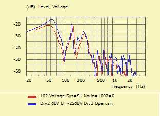
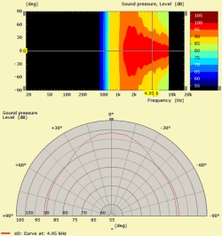
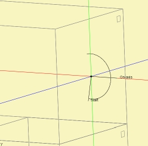
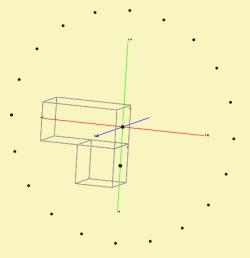
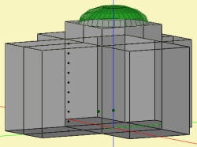

| Identifier | PlotType= | |
| Format 1 | [Contour] for Field | |
| Format 2 | [Curves, Directivity, Line, Arc] for BE_Spectrum | |
| Purpose | Type of calculation and associated graphical representation | |
| Used in | Field, BE_Spectrum | |
| See also | AnalysisType | |
PlotType=Contour segments the field value in contour-levels. This is currently the only selection and also the default value.
PlotType= selects the simulation and the associated graphical representation.
 |
PlotType=Curves is the default value and calculates the frequency response function for a single field point. The coordinates are given by the List of BE_Spectrum Items, which should follow the parameter-header.
For displaying, the curves are sent to VACS and assigned to the VACS-Tree-Folder as specified in section Control_Spectrum.
Example
Control_Spectrum
Name="Horn H 400"
ID=ID5000
NumFrequencies=100; Abscissa=log
Nodes "Spectrum"
Scale=1mm
1001 0 0 -300 // Point on-axis
1002 0 100 -300 // Point off-axis
BE_Spectrum
PlotType=Curves
AnalysisType=Pressure
RefNodes="Spectrum"
GraphHeader="Sound pressure"
BodeType=LeveldB; Range=50
101 1001 ID=5001
102 1002 ID=5002
In this example two curves will be calculated. The first is the sound pressure response at point 1001 with coordinates (0, 0, -300mm) and the second curve is at point 1002 with coordinates (0, 100mm, -300mm).
 |
 |
 |
 |
PlotType=Directivity calculates the frequency response for multiple field points, which are automatically arranged on a circular arc. Hence, 3D-charts are calculated with frequencies along the x-axis and the angular range along the y-axis, which eventually are rendered in contour-plots in VACS. In these contour-plots one projection yields a frequency response and the other yields the polar response. This means, that after calculation and data are transferred to VACS, you can inter-actively investigate frequency and polar responses.
For PlotType=Directivity to work you also need to specify PolarRange= and BasePlane=. Also, the List of BE_Spectrum Items should define an Inclination= angle.
For example
BE_Spectrum "Directivity"
PlotType=Directivity
GraphHeader="Directivity"
BodeType=LeveldB; Range=50
BasePlane=xy
PolarRange=-100,100,45
Distance=1600mm
101 Inclination=0 ID=201
In this example there are distributed 45 points on an arc at a distance of 1600mm ranging from -100° to +100°. Instead of rendering the actual points ABEC sketches a symbolic arc indicating the start and on-axis location.
PlotType=Arc is similar to Directivity only that the actual points are displayed in the 3D-viewer. Arc is useful if the receiving points are close to the structure.
For example
BE_Spectrum "Directivity"
PlotType=Arc
GraphHeader="Directivity"
BodeType=LeveldB; Range=50
BasePlane=xy
PolarRange=-180,180,45
Distance=600mm
101 Inclination=0 ID=301
PlotType=Line distributes observation points along a line.
With PlotType=Line we need two coordinates of the starting- and end-points of the line. Hence, a reference to a Node-section should be made. Also, the List of BE_Spectrum Items should define N=, which specifies the number of points.
BE_Spectrum
PlotType=Line
GraphHeader="Sound pressure"
BodeType=LeveldB; Range=50
RefNodes="Nodes"
//Name Node Node NumPoints
101 3000 3001 N=61 ID=401